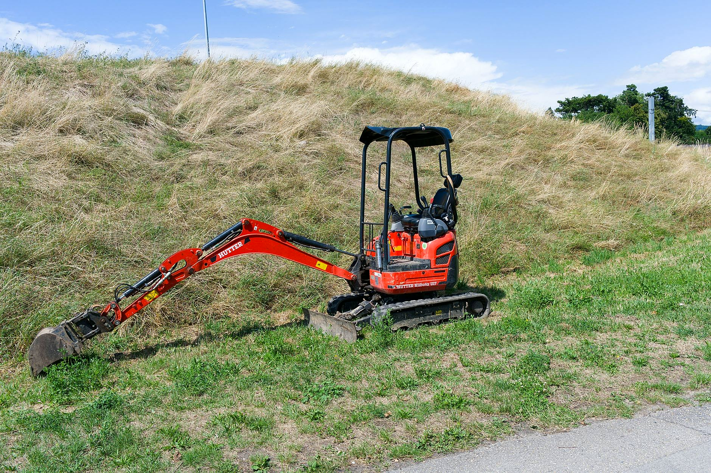
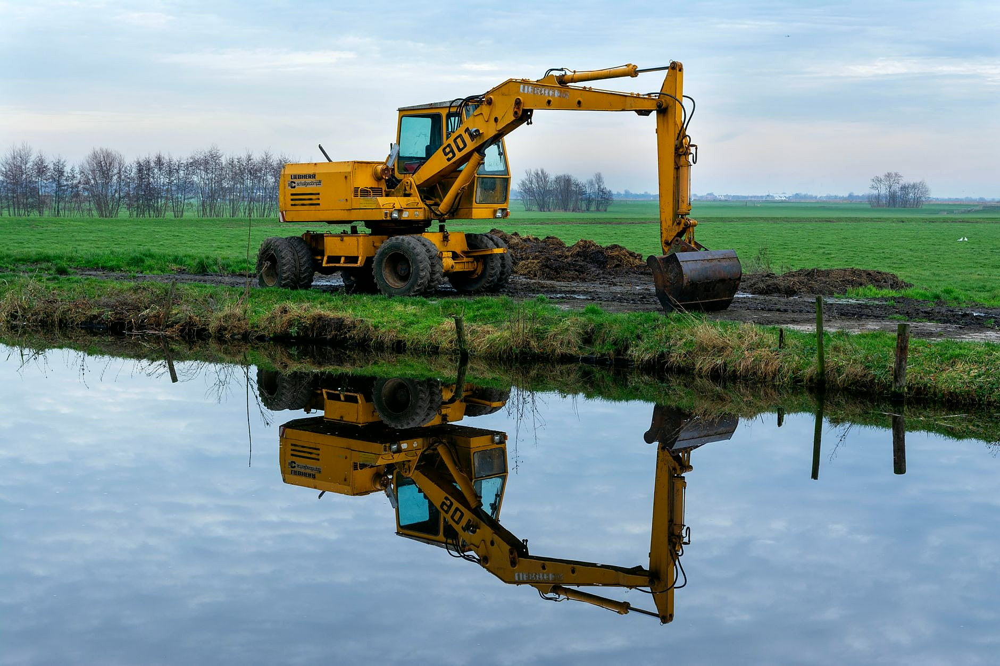
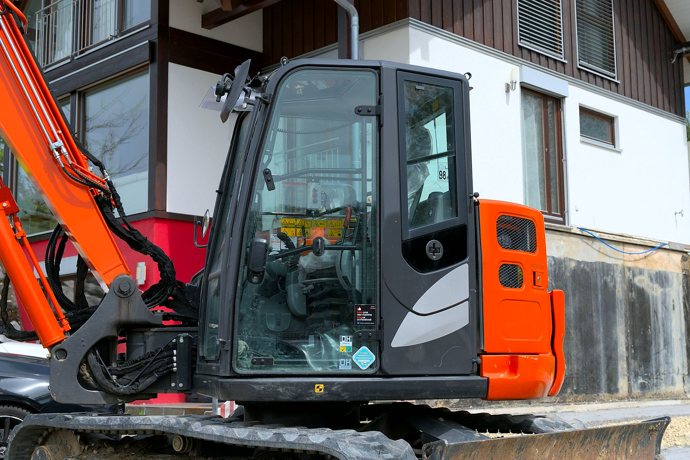
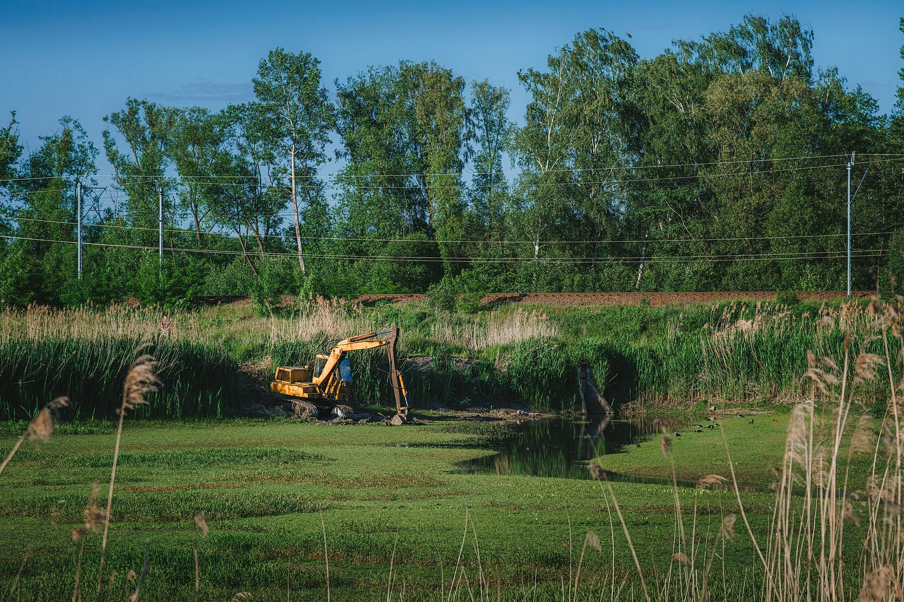
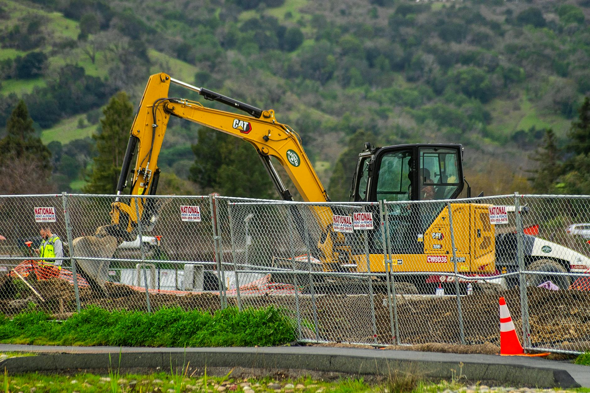

Prace ziemne minikoparką tam, gdzie duża maszyna nie wjedzie.
Wykopy pod fundamenty i przyłącza, drenaże, korytowanie pod kostkę i wyrównanie terenu w Wałbrzychu i okolicy.
Zadzwoń teraz +48 794 199 548- Wycena po oględzinach
- Wałbrzych i okolice
- Dla firm i osób prywatnych
Wiesz, na czym stoisz - na każdym etapie
Od pierwszego telefonu do odbioru roboty - krok po kroku.
- 01
Telefon
Dzwonisz i mówisz, co trzeba zrobić i gdzie. Wystarczy z grubsza: wykop, przyłącze, drenaż.
- 02
Oględziny i wycena
Sprawdzamy dojazd i grunt, podajemy cenę i ustalamy dzień wjazdu.
- 03
Praca minikoparką
Kopiemy, zasypujemy i równamy, pilnując ogrodzenia, trawnika i tego, co już stoi na działce.
- 04
Teren gotowy
Zostawiamy wyrównaną działkę, gotową dla murarzy, brukarza albo pod ogród.
Jakie prace wykonujemy
Wykopy, przyłącza, drenaże i wyrównanie terenu. Zdjęcia poglądowe pokazują rodzaj prac, które wykonujemy.





Co robimy minikoparką
Najczęstsze zlecenia. Przy każdym piszę, co wchodzi w zakres.
- Wykopy pod fundamentyŁawy fundamentowe pod dom, garaż, altanę albo ogrodzenie. Ziemię odkładamy w miejscu, które wskażesz, żeby wróciła potem do zasypki.Wycena →
- Przyłącza i rowyWąskie wykopy pod wodociąg, kanalizację, prąd i gaz, od budynku do granicy działki.Wycena →
- Drenaże i odwodnieniaRowy pod drenaż wokół domu, studnie chłonne i odprowadzenie deszczówki, żeby woda nie stała pod ścianą ani na trawniku.Wycena →
- Niwelacja i prace w ogrodzieWyrównanie działki pod trawnik, rozplantowanie ziemi po budowie, profilowanie skarpy i spadku od domu, doły pod drzewa i oczko wodne.Wycena →
- Korytowanie pod kostkęZdejmujemy ziemię na głębokość pod podbudowę podjazdu, ścieżki albo tarasu, żeby brukarz dostał równe koryto.Wycena →
- Prace w ciasnych miejscachPodwórka, przejścia między budynkami, działki za domem i teren przy istniejącym ogrodzeniu.Wycena →
Co mówią klienci
Najszybciej przez telefon.
Potrzebujesz fachowca? Wycenimy za darmo.
Napisz, co jest do zrobienia - obejrzymy na miejscu i wycenimy. Bez zobowiązań.